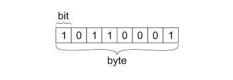

To first understand pictures you need to understand how computers store data. Most computers today store data using bits, these bits contain an on and an off state or better known as 0 and 1. This bit is the basics of of data storage.
Alone this bit is quite useless because it can only store 2 events (on and off) but when paired with other bits into a byte (8 bits) the data storage grows exponentially to being able to store 256 possible combination of 0s and 1s or events. This also gives computers the ability to store numbers from 0-255.
The RGB spectrum is used by most computers and softwares for calculating a color value. Each of the colors (red, green, and blue) are stored in one byte of imformation (0-255). Because of this range of reds, blues, and greens there are 16,777,216 possible colors that a computer can show.